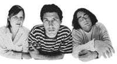

Yo La Hash
Hash: #832 April 8, 2002
Hare: Basket
Where: Cellular Phallic Symbol, North Smithfield
Scribe: Async
Weather: upper 50s, overcast
Present: Basket, Async, Bondo, WIPOS, Kneeling Room Only, EverReady
The Run:
Most, but not all, of the usual miscreants showed up at the start of Rhode Island Hash #832. Bondo and his keepers were the first to arrive, followed shortly thereafter by Async. WIPOS pulled into the parking lot in his little red NONO hashmobile. Kneeling Room Only temporarily escaped the clutches of the evil lite beer hash to the north. Basket & Baxter flew into the parking lot raising a cloud of dust and raised middle digits. There were, however, a couple of frequent hashers conspicuous by their absence. Dr WHO stayed home intensely studying his Roget's for new adjectives to include in future hash write-ups. Oozingwas AWOL in Bahston allegedly indulging in the C word. No, not that C word. We're talking CULTURE! Who woulda thunk it? Our favorite Paki terrorist chose to pass up a Monday night Rhode Island hash so as to spend the evening with the anemic, artsy-fartsy pansies pictured below.

"Our way of doing it is to jam for a really long time, find a song within it, then learn how to play it on acoustic guitar. The last thing we do is learn how to play it." -- Yo La Tengo |
Yes, Oozing has been seduced by the dark underbelly of American pop culture. Before you know it, the good doctor will be sporting tattoos, body piercings, baseball caps turned backwards, and droopy cargo pants. Sad, indeed.
The five of us took off to the north under the shadow of the North Smithfield Penile Envy cell tower. Kneeling Room Only and Async momentarily circled around in the woods before finding trail heading west across Route 7 and into the wooded shiggy. Hare Basket trailed behind with Baxter marking the checks forEverReady. (It was rumored that Rhode Island's sole remaining bimbo had started late on trail, after driving back and forth across the northern part of the state looking for the start. It was later learned that our corrupted soccer mom actually got lost on the way to the Yo La Tengo concert and decided to go to the hash instead).
Back at the start of the hash, professional hashers Bondo Jovi and WIPOS, like lumbering hippopotami on the Serengeti Plain, raised their noses in the air, and waddled off in a leisurely short cut to the beer check.
KRO and Async followed a series of trails, check, false trails, deer trails, and logging roads through deep woods to the north. They easily skirted a feeble excuse for a swamp shortly just before a 90 degree turkey, eagle split. Soaring like eagles, (or chicken hawks?) KRO and Async headed up a knoll, through some thick brush and out onto a groomed trail. After a few hundred yards, we popped back out into civilization into some poor slob's back yard. After a short dash down some private driveways and a sprint across a main road, we re-entered the shiggy north of the gravel pits. Hearing Basket's horn a short distance behind us, we followed flour to a construction site and a power line cut through the woods. Racing down the power line, we arrived at the beer check just in time to prevent Bondo and WIPOS from swilling the few remaining suds of Basket's pre-stashed beer.
Basket sounded his horn several times in an effort to help EverReady find her way to the beer check in the last moments of dusk. Since we soon ran out of the small amount of beer rescued from Bondo and WIPOS, we decided to leave the bimbo to her own devices, and head back to the cars and the circle.
The hare was called into the square for the usual abuse and humiliation. Bondo and WIPOS complained that the trail was too short, Async and KRO complained about the lack of bimbos, and Baxter, Ben & Jake complained about having to sniff the same old doggy butts week after week. All in all, a damn fine 6.9. The group concluded that Short Peck once again must have been a mystery hare.
During the circle, KRO seemed to be a little apprehensive about the missing wench. We told him not to fret, we can find other bimbos to replace her. After a final leisurely Swing Low in the dark, we reluctantly began to look for the missing ERSB. KRO took off up Route 7 in his car and Basket started down the trail. KRO found the ERSB walking along the road. The Rhode Island Hash was no-longer bimboless for the evening.
We repaired to Box Seats for the On-On-On. Async convinced everyone to order the tofu vegetable special. About 2/3rds of the way through the meal, a pretty young lady walked up to our table and gave the old BoomBoom a hug and kiss. What do the ladies see in the old bastard? Someone to pity? A resemblance to their grandfathers?
After the usual feeble attempts to flirt with the waitress, the old married men of the Rhode Island Hash ambled out to the parking lot, got back in their cars, and drove home for a dose of Metamucil and Ibuprofen before going to bed.
On On,
Async